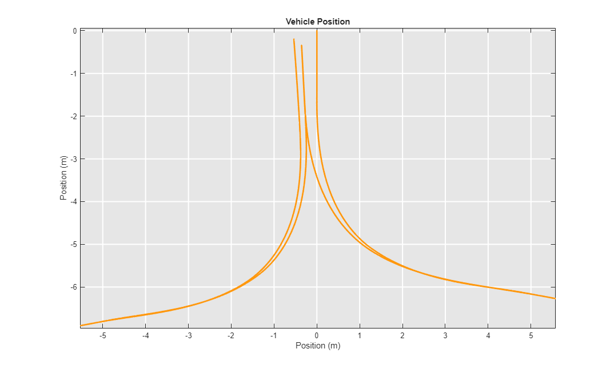
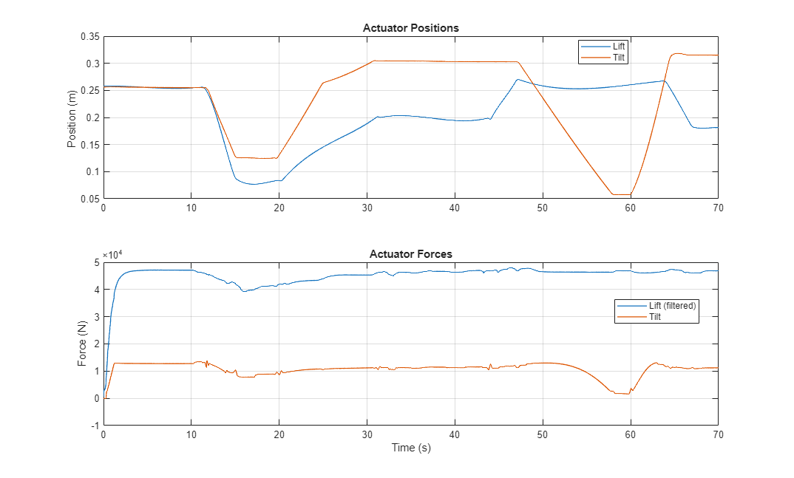
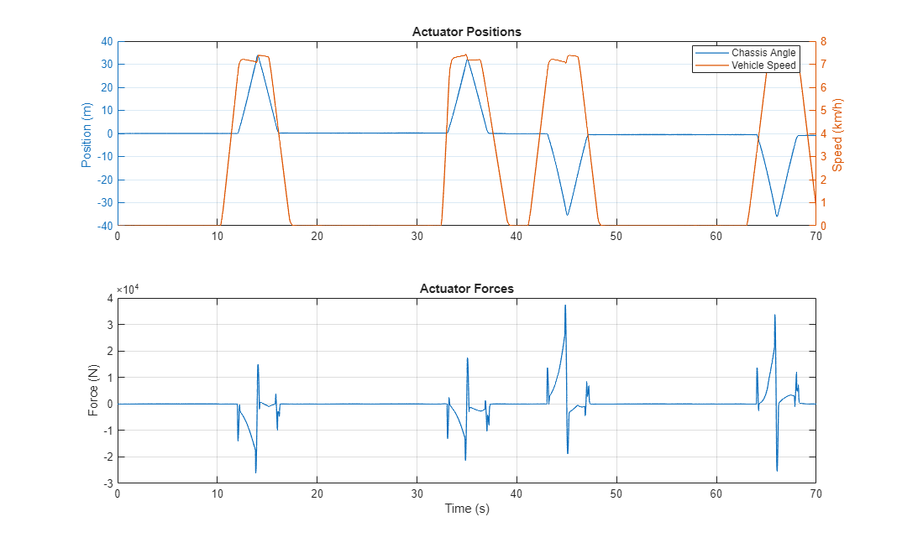
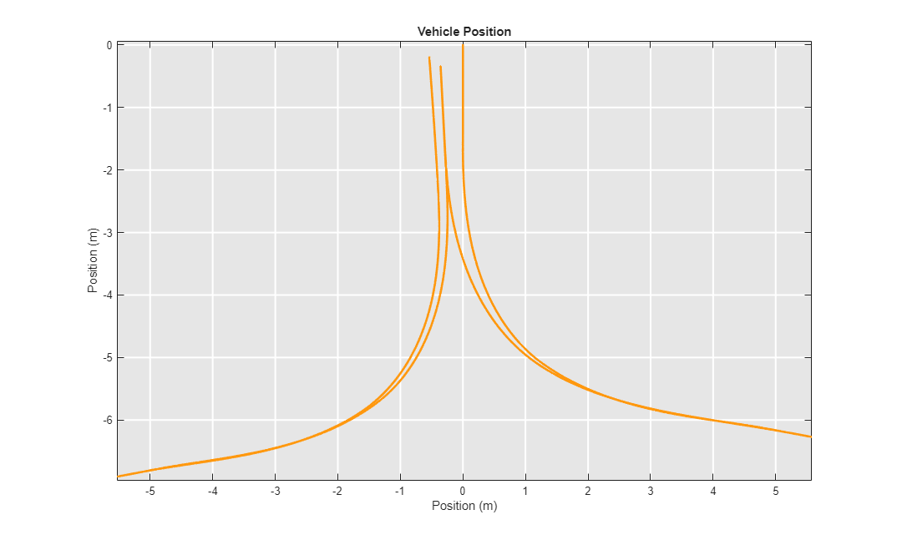
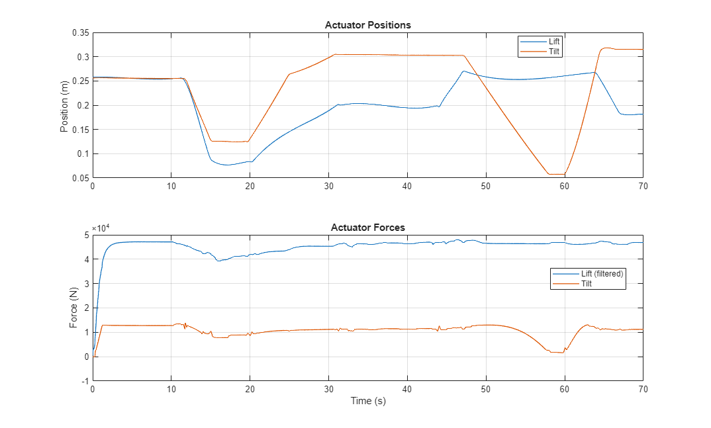
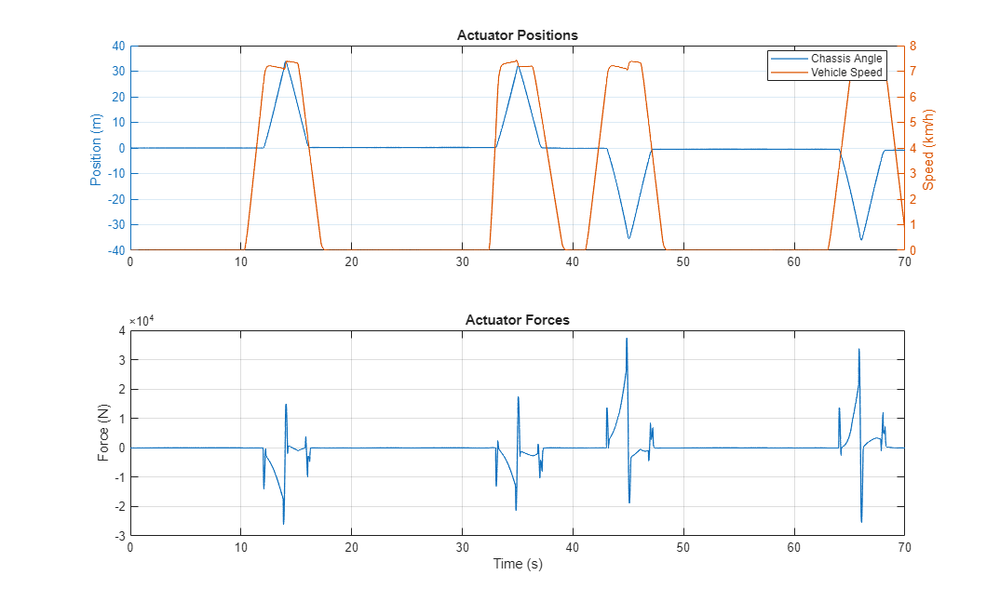
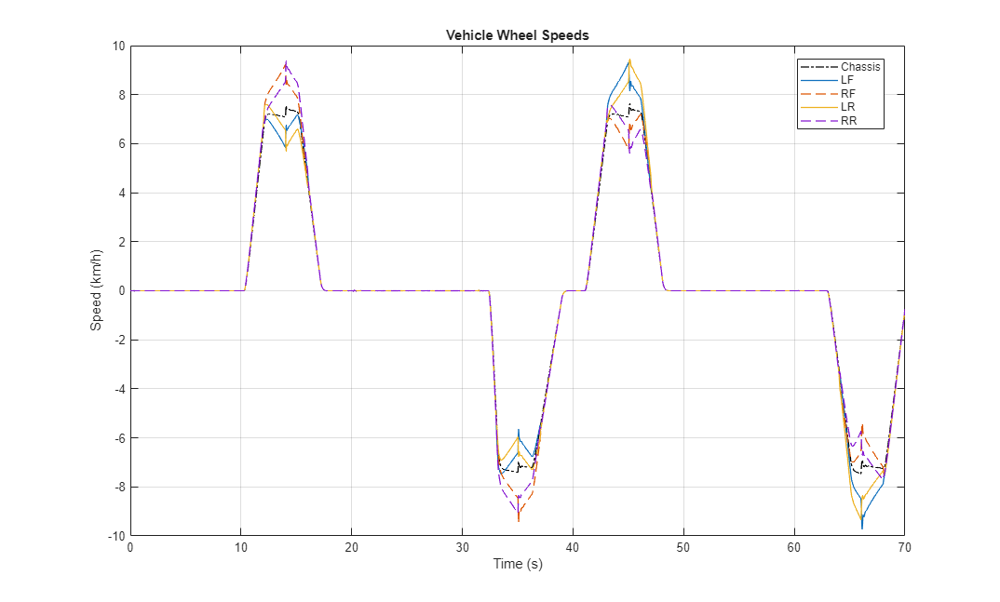
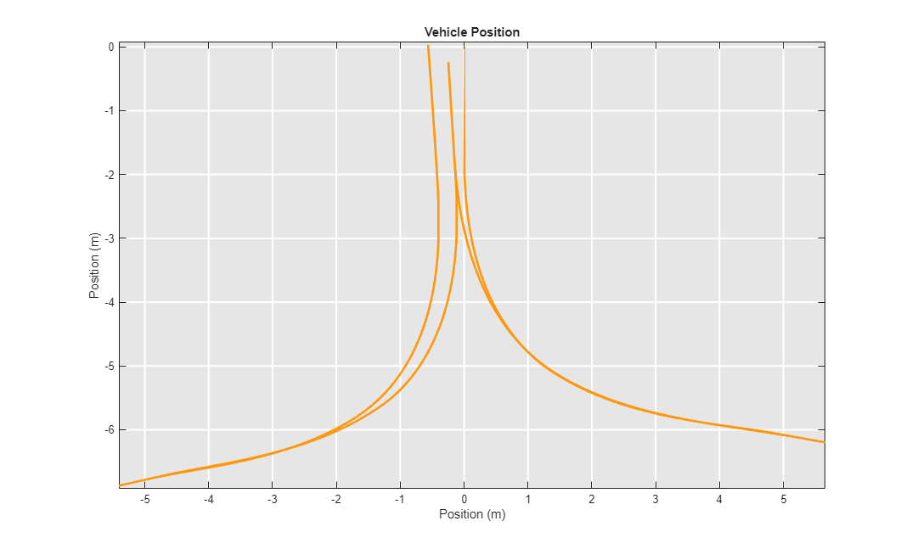
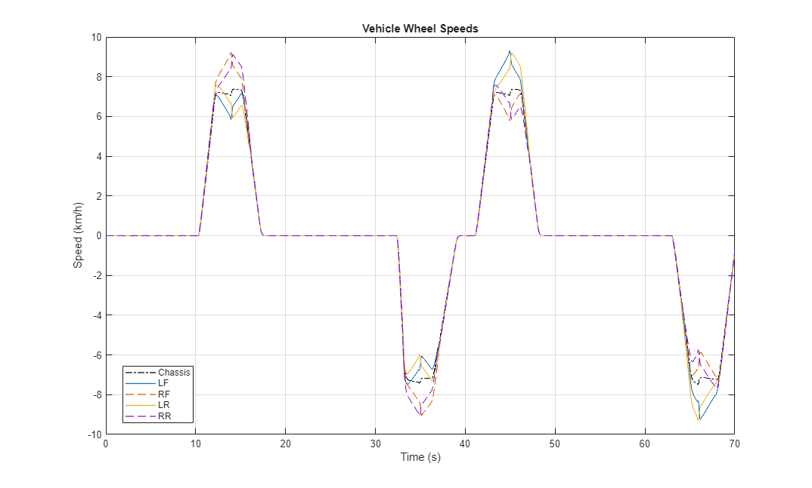

Wheel Loader Chassis, Drivetrain, and Linkage

(return to Wheel Loader Design with Simscape Overview)
This example models a wheel loader actuation system, steering, linkage with implement, drivetrain and chassis.
Contents
- Model
- Vehicle Subsystem
- Actuator Subsystem: Hydraulic
- Driveline 3D Subsystem
- Driveline 1D Subsystem
- Ground Contact FL: Sphere
- Ground Contact FL: Multibody Magic Formula Tire
- Ground Contact FL: Point Cloud
- Simulation Results: Y Cycle, 1D Driveline, Bucket, Ideal Actuation, Spheres
- Simulation Results: Y Cycle, 1D Driveline, Bucket, Ideal Actuation, Multibody Magic Formula Tire
- Simulation Results: Y Cycle, 1D Driveline, Grapple, Hydraulic Actuation, Spheres
- Simulation Results: Y Cycle, 3D Driveline CV Joints, Bucket, Ideal Actuation, Spheres
- Simulation Results: Load Cycle, 3D Driveline, U-Joints
Model
This example models a wheel loader actuation system, linkage with implement, steering system, drivetrain, and chassis. The powertrain is modeled as an ideal power source to speed up simulations by reducing computation.

Vehicle Subsystem
Model of the wheel loader vehicle, including front and rear articulated chassis, driveline, and linkage. An optional load can be added using variant subsystems.
The fidelity level of the mechanical driveline model can be set to different options:
- Driveline 1D : Shafts are modeled as rotational inertias only. Simulation runs very quickly.
- Driveline 3D : Shafts are modeled with a 3D multibody model. Captures all rigid body dynamics of the system.
The actuation model for the steering, linkage, and implements can be configured to use the following options
- Ideal: Cylinder positions are set using prescribed motion. Simulation runs very quickly. Used to determine actuator requirements.
- Hydraulic: Hydraulic pumps, valves, and cylinders are used to model the actuation system. Used to select hydraulic components and set pressure levels.
Actuator Subsystem: Hydraulic
In this configuration the cylinders are actuated by a hydraulic system. Pumps are driven by the PTO shaft, one for the linkage and implements and another for the steering system. Valves control the flow of hydraulic fluid to the actuators which extend and contract to the desired position.
The interface from this 1D model of the hydromechanical system and the 3D multibody of the linkage is a 1D mechanical connection for the rod of each cylinder.

Driveline 3D Subsystem
Models a four-wheel drive driveline using parts imported from a CAD assembly. The output of the CVT connects to the output transfer gear which is connected via differentials to all four wheels. A separate variant models the driveline as a 1D mechanical model that can be used for exploring the design space of shaft sizes and gear ratios.
Driveline 1D Subsystem
Models a four-wheel drive driveline using parts imported from a CAD assembly. The output of the CVT connects to the output transfer gear which is connected via differentials to all four wheels. A separate variant models the driveline as a 1D mechanical model that can be used for exploring the design space of shaft sizes and gear ratios.

Ground Contact FL: Sphere
The simplest ground contact model uses a sphere to represent the tire. This is suitable for use on a flat, planes where we can assume a single point of contact with any individual plane. The Spatial Contact Force in Simscape Multibody models normal and friction force between the sphere and the road surface.
Ground Contact FL: Multibody Magic Formula Tire
A more advanced contact model uses standard Magic Formula to represent contact between the tire and the ground. This is suitable for use on a flat or uneven surfaces. It models normal and friction force between the tire and road surface at the contact point. Note that the steady-state version of the magic formula tire equations does not include vertical damping. Since our vehicle suspension has no damping, we include a vertical damping component by adding a sphere at the center of the tire and only enabling vertical damping in the Spatial Contact Force block for the connection between the sphere and the ground.
Ground Contact FL: Point Cloud
A more advanced contact model uses a point cloud to model the geometry of the tire. This is suitable for use on a flat or uneven surfaces. It models normal and friction force between the tire and road surface at all points of the point cloud that touch the road surface. This block can be connected via the Spatial Contact Force block to a grid surface. This lets us test the wheel loader on uneven terrain.

Simulation Results: Y Cycle, 1D Driveline, Bucket, Ideal Actuation, Spheres
Run a bucket load Y cycle test with 1D driveline, ideal actuation, and spheres for wheel-ground contact.
Elapsed Sim Time = 7.8806
   
   Simulation Results: Y Cycle, 1D Driveline, Bucket, Ideal Actuation, Multibody Magic Formula Tire
Run a bucket load Y cycle test with 1D driveline, ideal actuation, and Multibody Magic Formula tires.
Elapsed Sim Time = 12.4243


Simulation Results: Y Cycle, 1D Driveline, Grapple, Hydraulic Actuation, Spheres
Run a grapple load Y cycle test with 1D driveline, hydraulic actuation, and spheres for wheel-ground contact.
Elapsed Sim Time = 150.456 

Simulation Results: Y Cycle, 3D Driveline CV Joints, Bucket, Ideal Actuation, Spheres
Run a bucket load Y cycle test with 3D driveline, CV joints, and ideal actuation.
Elapsed Sim Time = 61.3945
Simulation Results: Load Cycle, 3D Driveline, U-Joints
Run a bucket load Y cycle test with 3D driveline, U joints, and ideal actuation.
Elapsed Sim Time = 67.1396